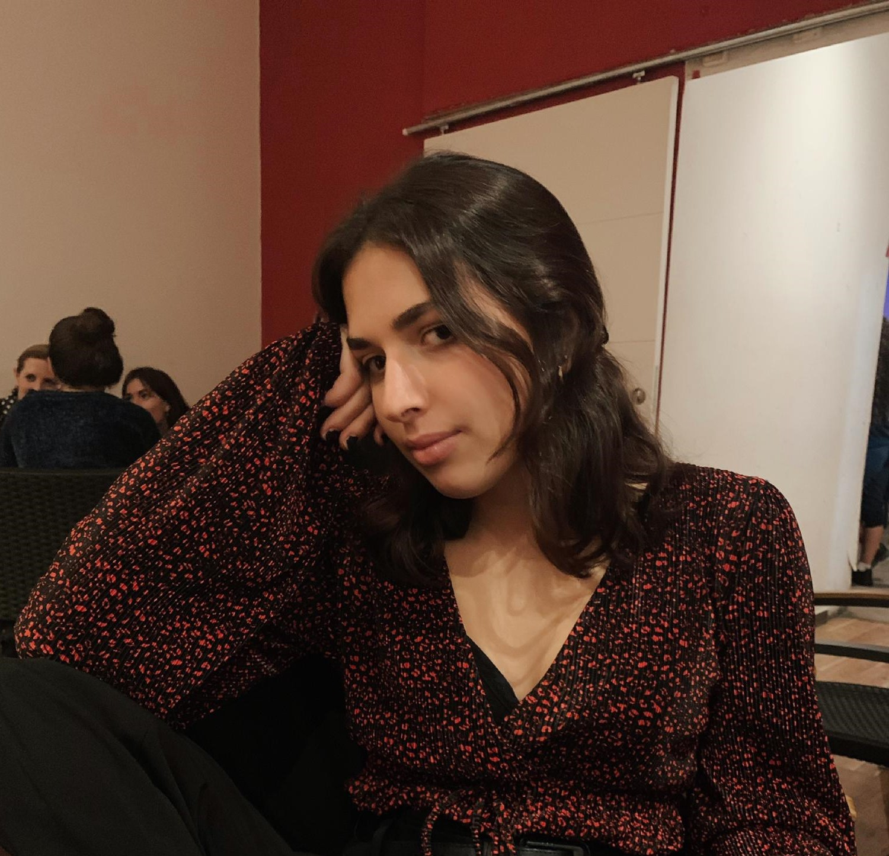

Beatriz Carrancio Casero

Contacto bcarranc@ucm.es
Hola, me llamo Bea y tengo 21 años. Soy más de artes que de ciencias pero hago el paripé.
Hola, me llamo Bea y tengo 21 años. Soy más de artes que de ciencias pero hago el paripé.
Hola soy Alejandro, tengo 22 años. Soy un friki del futbol y de los videojuegos. Un saludo!
Hola soy Jose, tengo 23 años, me interesa mucho el diseño gráfico y soy un apasionado de las series y el cine.

Soy Javi, tengo 20 años me interesa la parte de ciberseguridad por eso estudio ing informatica tambien me gusta la natacion entre otros deportes.
Tengo 21 años, me gusta la parte del backend en el desarrollo web, al igual que la parte de la ciberseguridad en software y redes. Futbolero, también hago alguno que otro proyecto propio.
Tengo 22 años y soy de Lanzarote, me estoy introduciendo en el mundo del desarrollo de videojuegos con Unity a la vez que curso mis estudios de ingeniería informática. Aficionado al fútbol y a los deportes de mar.